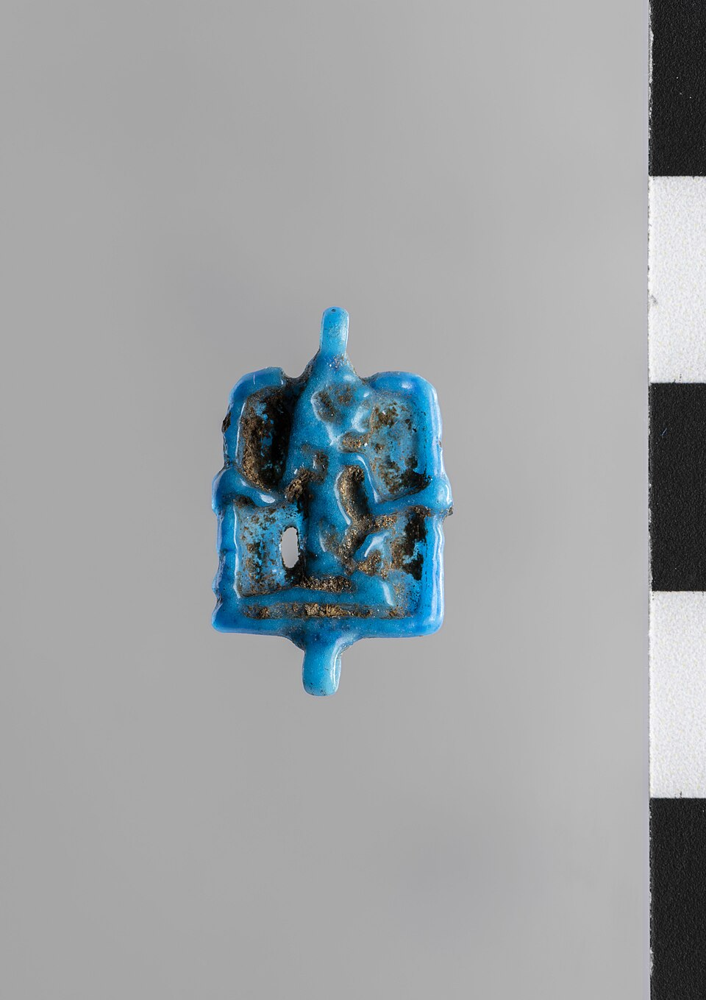

Египтяне умели считать очень большие числа и любили это: «да будет тебе дано миллионы лет» — стандартное благословение царю. Само слово «миллион» по-египетски — хех, и у него есть лицо. Хех — бог бесконечности и вечного времени: не вечность как неподвижность, а вечность как неисчислимая длина, «миллионы и миллионы».
В гелиопольском Восемеричном начале (Огдоаде) Хех — четвёртая пара: Хех и Хехет, «Бесконечность» и её женская половина, лягулоголовый с змееголовою. Три другие пары — Нун и Наунет (первовода), Кек и Каукет (мрак), Амон и Амаунет (скрытость). Из этого «восемья» выходит холм, из холма — солнце. Хех в этой компании отвечает за то, что у мира нет границы в длине: ни в пространстве, ни во времени.
Знак и число
- Иероглиф «миллион» — сидящий бог с поднятыми руками: сам Хех держит число на плечах, как Атлант держит небо.
- Числа Египта десятичны: 10 — дуга, 100 — верёвка, 1000 — лотос, 10000 — палец согнутый, 100000 — головастик, 1 000 000 — Хех. Высшая именованная единица — бог.
- «Хеху» (миллионы) в надписях — не точность, а жест: «да правит ты хеху лет» = без конца. Бог числа делает «много» священным.
Как его видеть
Хех — старик: сутулый, с морщинами, отвислым животом и длинной дряблой кожей, иногда с подвязанным подбородком (временно: он же бессмертен, а стар — только от долголетья). В поднятых руках держит свежесрезанные пальмовые ветви с насечками — счётчик лет: бог времени, который сам себя пережил, но не умер. Иногда — с жезлом уас и анхом на коленях: жизнь и власть, скрещённые над вечностью.
Держатели неба
В некоторых сценах Хех — среди столпов неба: наряду с Шу (Воздухом) и горами-хоризонтами он подперает свод Нут на четырёх сторонах света. Тогда он не «бог рядом», а опора мироздания: небо держится, потому что время не кончается. В «Книге Мёртвых» в барке Ра есть место и для Хеха — счётчик вёсел в ночном плавании солнца.
Хех и царь
На юбилеях седа жрецы приносили фараону связки пальмовых ветвей и читали: «дан тебе хеху лет, хеху седа» — миллионы лет, миллионы юбилеев. Формулы тронных имён («да живёт он вечно») — та же монета: бездна Хеха переведена в право царить. Хитрая деталь: на некоторых изображениях Хех несёт эти связки на спине — само время обслуживает трон.
Хех и нехех
Египтяне различали два лика вечности. Нехех — возрождение: солнце, которое встаёт снова, круг за кругом; его символ — скарабей. Джет — неподвижная длительность: «пребудешь ты в джет», как Осирис и как джед-столп. А Хех — между ними: число без конца, количественная бесконечность. Нун — вода без берегов, Амон — скрытость без дна, Хех — длина без конца. Так Восемеричное начало описало то, что нельзя пощупать, — и каждое дало богу имя.
Интересные факты
- Амулет «Хех» носили как талисман долголетия: маленького старика с ветвью закапывали под порог.
- В мифе о старении Ра «миллионы лет» богов — не метафора: Хех присутствует как аргумент, что срок вышел.
- В греко-римском Египте Хеха отождествляли с «Эоном» — Вечностью мистериальных культов; его образ дожил до первых веков нашей эры.
- В папирусах с «загадками числа» Хех стоит как самый большой знак: задача «сколько может быть хеху» — шутка-безмерность.